Art Animation · Rigging 3D
Rigging 3D bằng AI
trong Frolvy
Hướng dẫn từng bước cho người chưa biết gì về 3D animation. Ví dụ xuyên suốt: nhân vật Windy, thầy phù thủy gió cầm gậy.
Phần A · Hiểu từ số 0
Rigging là gì? Lắp xương và dây vào con rối
- Model = vỏ con rối: chỉ là một cái vỏ cứng, chưa cử động được
- Joint = khớp xương bên trong vỏ
- Skin = lớp da ôm quanh xương, xương xoay thì da xoay theo
- Control = sợi dây bạn giật để con rối cử động


Phần A · Hiểu từ số 0
Rig nằm ở đâu trong quy trình làm game
- Có model do artist tạo
- Rig: lắp xương, da, dây điều khiển (việc của tài liệu này)
- Animator kéo control để tạo chuyển động
- Xuất file FBX, đưa vào Unity để game chạy
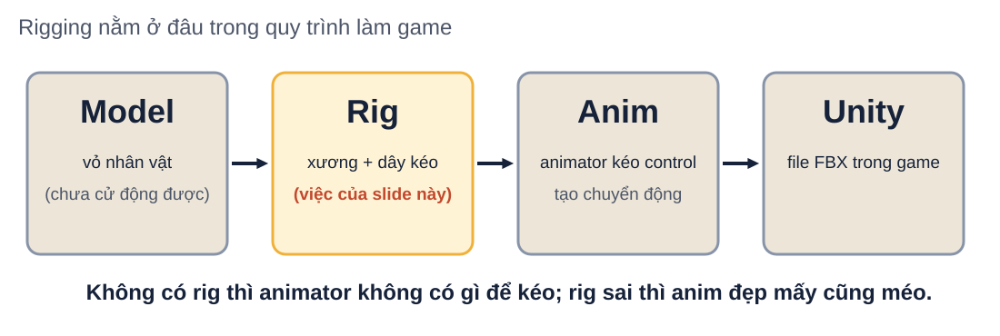
Phần A · Từ cần biết (1/2)
Năm từ đầu tiên


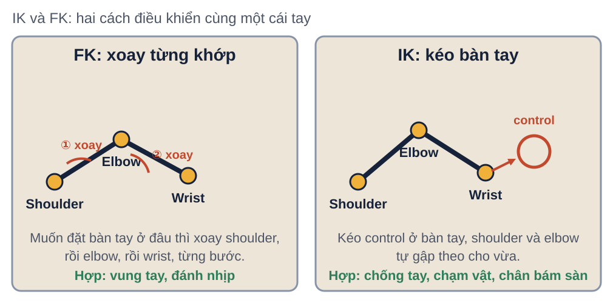
Phần A · Từ cần biết (2/2)
Năm từ tiếp theo


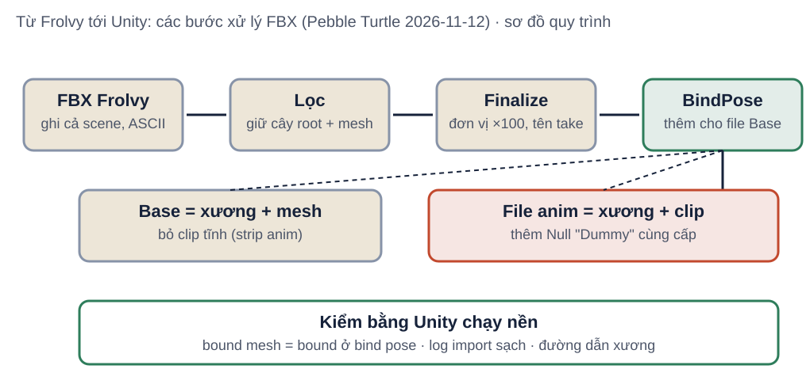

Phần A · Hiểu từ số 0
Ai làm gì: bạn, AI, Frolvy
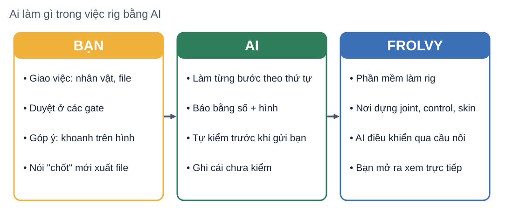
Phần B · Từng bước làm
Bản đồ 10 bước (ô vàng = cổng bạn duyệt)
Mỗi bước có 2 trang
Trang 1 (nền sáng): để làm gì, bạn chuẩn bị gì, AI làm gì, bạn xem gì để duyệt. Trang 2 (nền tối): lỗi AI hay mắc ở bước đó, có ví dụ thật.
Ví dụ xuyên suốt: Windy
Hình Windy là joint thật lấy từ file của dự án, vẽ lên mesh. Hình dán nhãn rõ là ảnh thật, sơ đồ hay hình vẽ từ file.
Bước 0 · Nhận việc
Biết mình có gì trong tay trước khi rig
- File model (FBX) và texture
- Tài liệu thiết kế: cần anim gì, đạo cụ gì
- Nói rõ nhân vật dùng cho game nào
| Windy: file trong tay | Dùng để làm gì |
|---|---|
| Hero_Windy.fbx | Model: thân + gậy (2 mảnh) |
| T_Colorpalette.tga | Texture (bảng màu) |
| Hero_Windy.fvfit | Vị trí joint đã đặt (36 joint) |
| Hero_Windy_rig.fv | Rig đã dựng trong Frolvy |
| Tài liệu thiết kế | Cần Idle, Attack, Skill 1–3; ở Skill 3 gậy bay tự do trước mặt |
Bước 1 · Đo model
Đo model bằng số: mảnh, cỡ, hướng mặt
- Liệt kê từng mảnh rời, đếm đỉnh
- Đo chiều cao, sải tay, đơn vị
- Báo hướng mặt, tay cầm gì
Bước 1 · Lỗi AI hay mắc
Đo sai thì joint đặt sai từ đầu
Cắt cả model một lần: váy lẫn vào lát chân, giáp lẫn vào lát tay. Công cụ chỉ cắt mảnh lớn nhất nên lát chân và tay ra rỗng.
Mô tả mảnh theo đoán: gọi mảnh 80 đỉnh là "mắt", thực ra là cánh Night Bat. Hai file mesh mới còn quay ngược 180°.
Mesh nằm lùi 3 cm so với bản cũ nên joint đặt theo số cũ lệch đều 2–3 cm.
Yêu cầu AI đo bằng số, gửi bảng (số đỉnh, số mảnh, cỡ, hướng) trước khi đặt joint. Chỗ nào chỉ đoán thì bắt AI ghi rõ "chưa chắc".

Bước 1b · Kiểm lưới
Lưới (mạng ô vuông) tốt thì da mới uốn đẹp
- Đếm tam giác, xem toàn quad hay tam giác tự động
- Xem có vòng lưới quanh vai, khuỷu, gối, cổ, mặt
- Xem model đang ở tư thế T hay A


Bước 1b · Lỗi AI hay mắc
Chữa lưới sai cách
Giảm mesh (decimate) không phải retopo: chỉ bớt tam giác, không sửa được hướng lưới. Quadriflow cho lưới đều nhưng không theo xương, không có vòng mắt, miệng ("cách đi lưới chưa đúng").
Bake normal từ mesh Tripo mang theo lồi lõm, phải bỏ. Texture bake bị lật dọc khi vào Frolvy.
Hỏi AI: lưới đạt hay chưa đạt, chỗ nào. Chưa đạt thì xin bản retopo của artist trước khi rig.
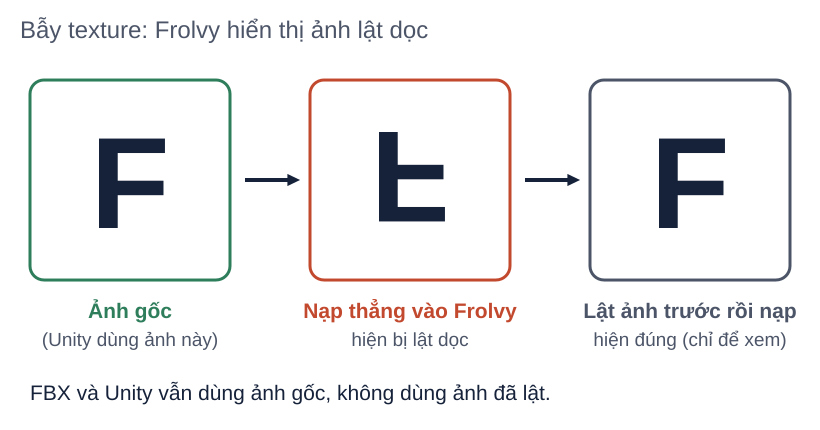
Bước 2 · Đặt joint (1/6)
Joint đặt ở chỗ khớp thật sự xoay, không phải giữa khối

Bước 2 · Đặt joint (2/6)
Chân: Hông, Gối, Cổ chân, Ngón chân

Bước 2 · Đặt joint (3/6)
Thân và đầu: cột sống chia đều, HeadEnd ở đỉnh đầu

Bước 2 · Đặt joint (4/6)
Tay: Vai bả, Vai, Khuỷu, Cổ tay, ngón tay

Bước 2 · Đặt joint (5/6)
Cổng duyệt: bạn xem hình 3 góc và sửa điểm sai
- Chest hạ xuống thấp hơn 4 cm
- HeadEnd về đỉnh đầu (trong file đang cao hơn đầu 10,7 cm)
- Scapula và Shoulder dịch ra ngoài 6 cm

Bước 2 · Lỗi AI hay mắc
AI đặt theo tâm hình khối, người duyệt phải chỉnh tay
Hậu chỉnh tay 18 / 33 joint hơn 2 cm (trung bình 2,5 cm, lớn nhất 8,4 cm). Cổ chân AI đặt cao 0,115, đúng là 0,065. Hướng bàn chân AI đo ra 5–9°, đúng khoảng 39°.
Cột sống không chia đều, Neck thấp 2,9 cm; hông lệch ra ngoài 2,5 cm; gốc tai theo mép ngoài thay vì sát đỉnh đầu (lệch khoảng 5 cm).
Bắt AI chụp 3 góc gửi bạn trước khi build. Số đo tâm mặt cắt chỉ để tham khảo, bạn nhìn bằng mắt rồi mới duyệt.


Bước 3 · Chuỗi joint
Đuôi, tai, hàm, áo choàng, khăn: mỗi thứ một chuỗi joint
- Đặt chuỗi theo đường tâm của bộ phận
- Đầu chuỗi ở chỗ gắn vào thân (cạp váy, gốc đuôi), không ở Root
- Chỗ cuộn gấp thì thêm đốt, điểm cuối nằm trong mesh


Bước 3 · Lỗi AI hay mắc
Chuỗi joint và phần người đã chỉnh
Người dùng hạ Root, Chest, Neck xuống 4–13 cm. Phải đặt lại Hip, Scapula, khăn, HeadEnd. Neck và Head bị hạ dưới vai: AI chỉ nên nhắc rủi ro, không tự đổi lại.
Lệnh Build với danh sách "một bên" để rỗng đã xoá cả control bên trái. Hoàn tác không lấy lại, phải dựng lại rig.
Đuôi cuộn đặt thiếu đốt ở chỗ cuộn, Hậu thêm một đốt và hạ hai đốt cuối.
Sau khi bạn sửa joint, nói: "giữ nguyên chỗ mình sửa, chỉ đặt lại các joint con". Lệnh có nguy cơ xoá (Build, Rebuild) thì nhắc AI lưu file trước.

Bước 4 · Build Rig
Bấm Build Rig: từ bộ xương trần ra rig dùng được
- Tắt helper, bendy, twist (game không cần)
- Mọi control về 0
- Root đặt ở hông, không có Pelvis
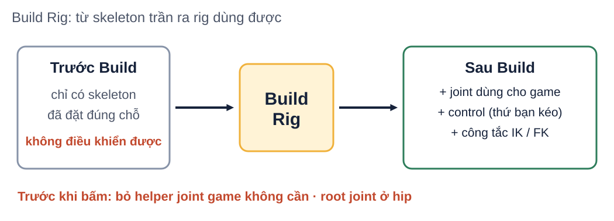
Bước 4 · Lỗi AI hay mắc
Build và Rebuild để lại rác
AI tự bật "helper set": thêm 126 joint thừa, thân bị kéo theo tay chân.
Rebuild khi Pelvis đang lệch: pose bị nướng vào rig, rig nghiêng dù mọi control = 0. Sau Rebuild còn mất dây tuỳ chỉnh, pivot control nằm ở chỗ joint cũ.
Dựng lại rig trong cùng scene: joint và constraint cũ vẫn bị xuất ra thành joint ma trong FBX.
Build một lần cho sạch. Rebuild thì bảo AI đưa control về 0 trước và kiểm lại pivot sau.

Bước 5 · Control
Control phải thấy được, bấm được, hai bên giống nhau
- Vẽ ôm sát mesh, rộng hơn vài cm
- Control trục giữa cùng cỡ, nằm giữa
- Hai bên trái và phải soi gương nhau
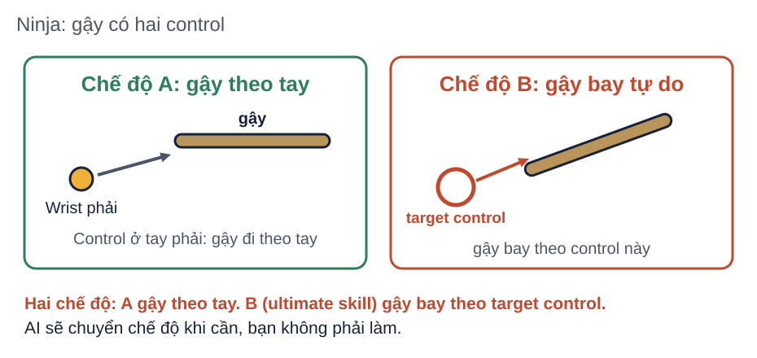
Bước 5 · Lỗi AI hay mắc
Control ẩn, to quá, lệch hai bên
"Mỗi lần tạo control luôn bị ẩn trong mesh". Vòng cổ chân 2 m, vai 2,5 m vì váy, mũ là lưới một lớp. Switch tay phải ra 2 cm trong bàn tay, tay trái 5,6 cm trên cổ tay.
Vòng ôm cả rìu: cổ tay 1,46 m, Root 1,85 m.
Shoulder phải 0,84 m, trái 0,15 m; HipSwinger lệch 33 cm khỏi hông.
Bảo AI: "liệt kê cỡ mọi control, so trái với phải" rồi mới duyệt.
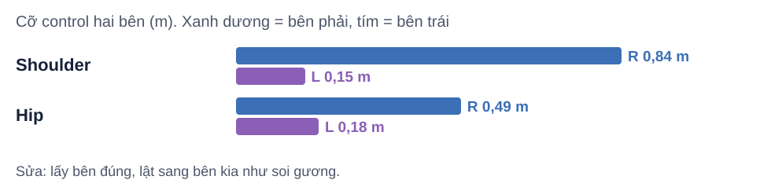
Bước 6 · Skin (1/5)
Skin: da của nhân vật bám vào xương bao nhiêu phần
- Chỉ bám joint DEF, tối đa 4 joint mỗi đỉnh
- Mảnh cứng (giáp, mắt, gậy): 100% một joint
- Joint xa không được kéo: tay chân không kéo thân
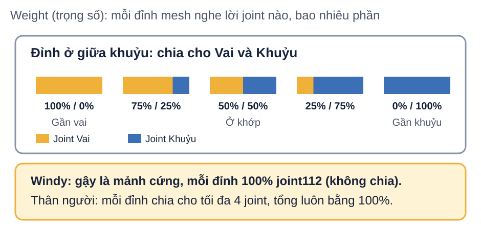
Bước 6 · Skin (2/5)
Cổng duyệt: thử xoay từng khớp ở góc thật

Bước 6 · Lỗi AI hay mắc (3/5)
Vai, ống tay, khuỷu
Xoay vai thì ống tay thót hình nêm vì mép dưới ống tay còn bám thân. Sửa: vertex tay chỉ bám Shoulder (và Elbow gần khuỷu).
Khuỷu hở 4,1 cm khi gập 57°. Lần 1 AI kéo cả bắp tay theo khuỷu thì tay móp (71 cạnh xấu). Sửa đúng: chỉ phần nằm trong ống giáp = 100% joint của ống.
Bả vai không theo Scapula (20 / 79 đỉnh, trung bình 4%). Sửa lên 53 / 79 đỉnh, 21%.
Nói rõ góc xem và khớp nào móp. AI đo trên phần nhìn thấy, đừng đo cả phần nằm trong ống.

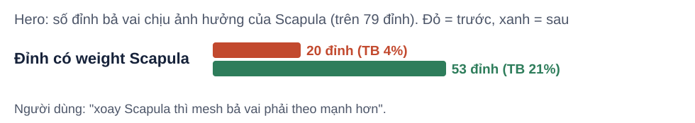
Bước 6 · Lỗi AI hay mắc (4/5)
Chân móp, và sửa quá tay cũng móp
"Tay không móp mà chân móp": 74 / 545 đỉnh chân ăn sai joint. Chân dùng dải chiều cao tự đặt thay vì bám vị trí khớp như tay.
Làm mịn weight quá tay: sau gối co từ ×0,45 xuống ×0,29. Hạ 2 lượt và bỏ qua vùng sau gối, đáy quần.


Bước 6 · Lỗi AI hay mắc (5/5)
Lỗi ngầm: nhìn pose gốc thì ổn, chạy anim mới vỡ
Người dùng báo "cánh dính vào mặt, tai" 4 lần. Gốc không phải weight: skin được bind lúc một control đang lệch. Tai nối cánh bằng mặt dài nên skin không tách nổi, phải tách tai thành mesh riêng.
Joint root có skin: 277 / 1199 đỉnh. Root dời thì thân méo.
Bảo AI: "mọi control về 0 trước khi bind", và kiểm root không có skin trước khi xuất.

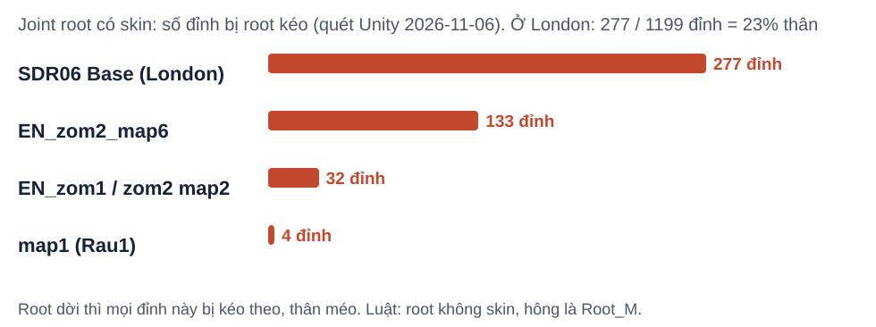
Bước 7 · Picker
Picker: bảng nút để chọn control cho nhanh
- Bấm từng nút = đúng control
- Không nút nào đè nhau
- Nút All chứa mọi control
Đổi cỡ control 3D mà không đổi nút picker: "kích cỡ control thân ở picker vẫn chưa thay đổi". Hai vòng sửa vì không đồng bộ.
Bước 8 · Kiểm rig
Thử rig như animator sẽ dùng, không chỉ đọc số
- Thử đủ 4 tay chân, IK và FK
- Đổi frame rồi pose gốc phải đứng yên
- Texture đúng trên viewport
- Windy: xoay tay xem gậy có theo, xem áo choàng

Bước 8 · Lỗi AI hay mắc
AI báo "xong" khi chưa thử hết
Group rìu constrain vào cổ tay DEF làm cổ tay thôi chạy. Kiểm rig báo sạch vì mặc định chỉ thử tay trái.
Hàm thử đưa control về 0 nên xoá mất pose bạn đang thử (2 lần), và trả công tắc sai thứ tự làm tay IK trái về 0.
Rig không về dáng gốc: bind lệch gối 2,1 cm, kênh control "chết" giữ giá trị lệch. Phiên con không tự thấy, người phải bắt.
Hậu: "rig chưa ổn", "mọi joint sai". AI báo xong khi chưa soi control và joint từng cái bằng số.
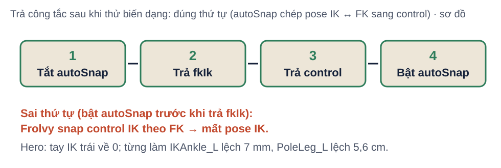
Bước 9 · Xuất FBX
Xuất file cho Unity: Base và file anim khác nhau
- Base = xương + mesh
- File anim = chỉ xương + clip, không mesh
Bước 9 · Lỗi AI hay mắc
FBX từ Frolvy vào Unity bị vỡ
Base vỡ skin: đầu và chân bay khỏi thân (Unity lấy bind pose từ cluster, Frolvy không ghi BindPose). Sửa: thêm BindPose, bỏ clip tĩnh khỏi Base.
File anim lỗi "Cannot find root motion transform": file chỉ có một nút gốc. Sửa: thêm Null "Dummy" cùng cấp, chỉ ở file anim.
Joint ma, node thừa trong FBX vì Frolvy luôn ghi cả scene. Sửa: lọc sau khi xuất, giữ cây root + mesh.
Bảo AI chạy kiểm bằng Unity chạy nền và đọc log import. Có lỗi mới thì đọc log, không đoán.
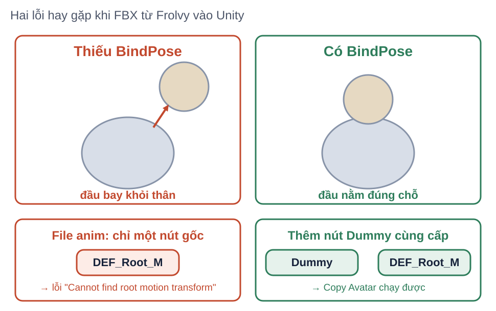
Phần C · Dùng ngay
Thấy gì thì nghi lỗi nào
| Bạn thấy | Thường là do | Làm gì |
|---|---|---|
| Mesh móp khi xoay một khớp | Weight sai vùng, vertex bám joint xa | Nói rõ khớp và góc; AI thử lại bằng mắt, camera cận |
| Mặt, tai dính vào cánh, mảnh khác | Bind lúc control đang lệch, hoặc mesh hàn liền | Control về 0, bind lại; hoặc tách mảnh |
| Rig nghiêng dù control = 0 | Rebuild khi đang lệch pose | Control về 0 rồi Rebuild; kiểm pivot |
| Control ẩn, to quá, lệch hai bên | Vẽ control không theo mesh | Liệt kê cỡ, so trái phải |
| Joint nằm sai chỗ khớp | AI đặt theo tâm hình khối | Xem 3 góc, tự dời tay rồi nói AI giữ nguyên |
| Vào Unity: mesh vỡ hoặc lỗi gốc | Thiếu BindPose, thiếu nút Dummy | Chạy bước xử lý FBX, kiểm Unity |
| AI báo xong mà bạn vẫn thấy sai | Chưa kiểm hết (4 chi, đổi frame) | Bắt AI liệt kê cái chưa kiểm |
Phần C · Dùng ngay
Cách nói với AI để nó làm đúng
Phần C · Dùng ngay
Checklist duyệt rig (12 mục)
- Lưới đã kiểm, retopo xong nếu cần
- Joint đặt ở điểm xoay, đã xem 3 góc
- Root ở hông, không helper, twist
- Chuỗi vải, đuôi, tai theo đúng hình
- Control ôm mesh, không ẩn, không quá to
- Hai bên trái phải đối xứng
- Skin chỉ DEF, tối đa 4 joint, không lẫn bên
- Root không có skin
- Đã xoay vai, khuỷu, hông, gối, cổ, thân bằng mắt
- Pose gốc đứng yên khi đổi frame
- Picker khớp control, không nút đè nhau
- AI ghi rõ cái chưa kiểm
Gửi checklist này kèm mỗi bản rig để người duyệt biết đã kiểm tới đâu.
Phần C · Dùng ngay
Bẫy của Frolvy: lỗi của công cụ, không phải của AI
Xoá khi đang ở chế độ đỉnh / mặt thì xoá nhầm mesh khác, Ctrl+Z không lấy lại (Hero 2026-10-31). Luôn về chế độ object trước khi xoá.
Hoàn tác nhiều bước có thể lùi quá việc bạn đã làm. Sửa tiến, kiểm lại sau undo.
Cổng chết thì lệnh tự nhảy sang cửa sổ Frolvy khác, không báo. Kiểm scene sau mỗi lần Frolvy khởi động lại.
Lưu đè file đã có thì báo False; mở file khi scene đang sửa thì báo False và lệnh nhập sau đó chồng vào scene rig.
Giữ vị trí cục bộ của con (cả cây nhảy lên), xoá nhãn cha. Skin vẫn trỏ joint đã xoá sau Rebuild: lưu weight trước.
Gặp lỗi của Frolvy
Ghi một dòng: Lỗi / Cách thấy / Mong muốn. Hỏi bạn rồi mới gửi cho đội phát triển.